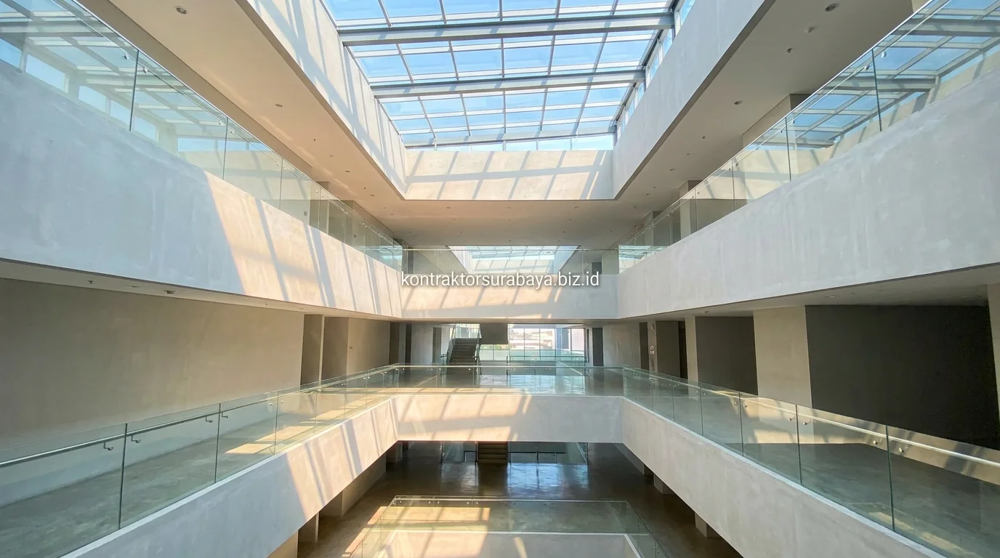

Dinamika bisnis di pusat kota dan koridor komersial Surabaya menuntut bangunan usaha—seperti ruko, gedung perkantoran, kafe, restoran, dan showroom—untuk tampil memikat secara visual sekaligus efisien secara operasional. Pemilik usaha dan investor properti kini beralih dari model ruko konvensional yang kaku ke arah arsitektur modern yang mengedepankan keterbukaan dan kenyamanan pelanggan.
1. Fasad Kaca dan Elemen Terbuka untuk Meningkatkan Visibilitas Usaha
Kaca tempered pada bagian depan yang dipadukan dengan signage terintegrasi membuat aktivitas di dalam bangunan sedikit terlihat dari luar dan menarik minat pejalan kaki serta pengendara jalan raya.
Kaca tempered dipilih karena memiliki ketahanan tinggi terhadap benturan dan aman untuk area publik, sementara signage branding diintegrasikan langsung ke desain fasad sejak gambar kerja arsitektur, bukan sekadar ditempel sebagai elemen terpisah. Bangunan usaha dengan fasad tertutup rapat dan minim bukaan kini semakin ditinggalkan konsumen modern.
2. Tata Ruang Fleksibel untuk Kebutuhan Usaha yang Berkembang
Bentang kolom lebar (wide column grid) dan dinding partisi non-permanen memungkinkan pemilik usaha mengubah tata ruang di kemudian hari tanpa perlu membongkar struktur utama bangunan.
Bentang kolom lebar mengurangi jumlah sekat struktural masif di tengah ruangan, sementara partisi non-permanen (seperti partisi kaca aluminium atau drywall) memudahkan penambahan area display produk, ruang kerja komunal, atau gudang kecil saat skala bisnis berkembang, tanpa memerlukan renovasi besar-besaran yang menghentikan operasional harian.
3. Pencahayaan Alami dan Sirkulasi Udara sebagai Nilai Tambah Kenyamanan
Skylight pada atap, jendela tinggi, atau void internal membantu mengurangi kebutuhan pencahayaan lampu buatan pada siang hari tanpa mengorbankan kenyamanan temperatur pengunjung.
- Skylight Atap Kaca: Memasukkan cahaya matahari alami langsung ke area tengah bangunan sehingga suasana ruang terasa lebih hangat dan lapang.
- Jendela Atas (High Windows): Membantu sirkulasi udara vertikal sekaligus pencahayaan pada ruang usaha bertingkat.
- Void Internal: Menjadi jalur distribusi cahaya dan ventilasi udara alami bagi lantai-lantai di bawahnya, menurunkan konsumsi listrik pendingin udara.

4. Material Eksterior yang Tahan Cuaca dan Rendah Perawatan
Aluminium Composite Panel (ACP), batu alam, dan cat eksterior berlapis UV dipilih karena memiliki daya tahan prima terhadap paparan cuaca tropis Surabaya tanpa memerlukan biaya perawatan intensif.
- Aluminium Composite Panel (ACP): Tahan terhadap hujan asam dan terik matahari, mudah dibersihkan, serta memberikan visual fasad futuristik yang presisi.
- Batu Alam & Homogeneous Tile: Memberi aksen kokoh dan mewah pada lantai dasar dengan perawatan yang sangat minim.
- Cat Eksterior UV-Resistant: Melindungi pigmen warna dinding luar agar tidak cepat kusam atau pudar tergerus cuaca panas.
5. Bagaimana Menentukan Skala Bangunan yang Tepat untuk Jenis Usaha Tertentu?
Usaha ritel dan kuliner dengan lalu lintas pengunjung tinggi membutuhkan area sirkulasi pengunjung yang lebih lega, sementara usaha berbasis perkantoran atau klinik jasa lebih memprioritaskan ruang privat dan ruang pertemuan kedap suara.
Analisis kebutuhan ruang harus dilakukan di tahap awal konsultasi bersama kontraktor, sebelum gambar DED dan estimasi RAB disusun. Langkah ini memastikan setiap meter persegi luas lantai terbangun memberikan nilai tambah finansial (Return on Investment) yang maksimal bagi operasional bisnis Anda.
6. Integrasi Area Parkir dan Aksesibilitas dalam Desain Bangunan Usaha
Posisi pintu masuk utama, alur jalur pejalan kaki, dan kapasitas parkir kendaraan perlu direncanakan secara cermat sejak awal desain, terutama untuk bangunan komersial di kawasan padat lalu lintas Surabaya.
- Arah Akses Masuk: Posisi pintu masuk diselaraskan dengan arah datang pengunjung dari jalan utama (traffic flow).
- Zonasi Pejalan Kaki: Jalur pedestrian dipisahkan dengan jelas dari manuver kendaraan untuk menjamin keselamatan dan kenyamanan pengunjung.
- Kapasitas Parkir Memadai: Rasio lahan parkir disesuaikan dengan proyeksi volume pengunjung harian serta regulasi izin kelayakan lalu lintas (Andalalin) setempat.
"Bangunan komersial yang sukses adalah sinergi antara fasad yang memikat pengunjung, tata ruang yang fungsional, dan kecepatan waktu konstruksi agar bisnis segera beroperasi."
Setiap proyek bangunan komersial memiliki kebutuhan spesifik tergantung pada jenis usaha, lokasi jalan, dan skala operasional bisnis Anda. Tim kontraktor dan insinyur kami siap menangani pembangunan proyek ruang usaha di berbagai kawasan strategis Surabaya, Sidoarjo, Gresik, Mojokerto, hingga Madura.
Lihat dokumentasi proyek komersial kami pada galeri proyek kami, atau pelajari cakupan layanan konstruksi lengkap di halaman jasa kontraktor bangunan Surabaya.